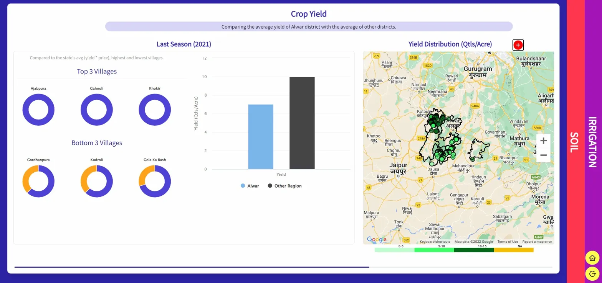
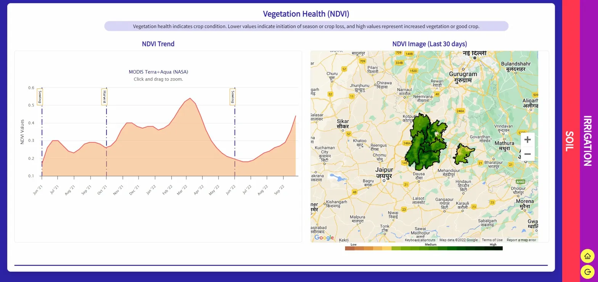
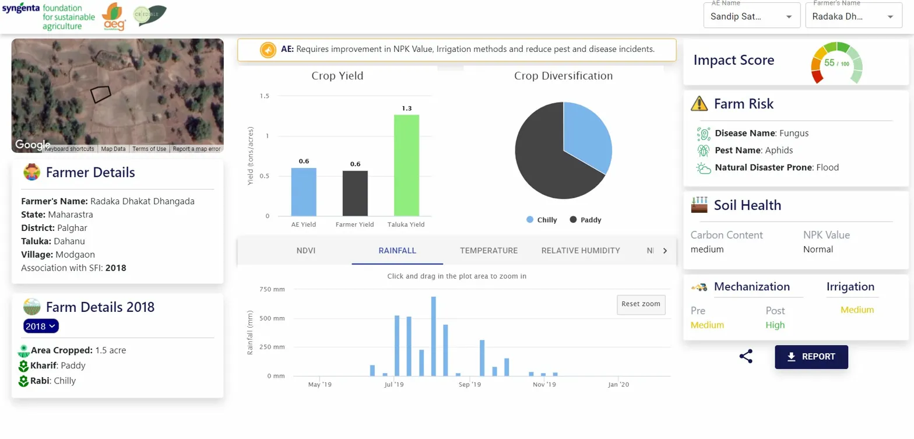
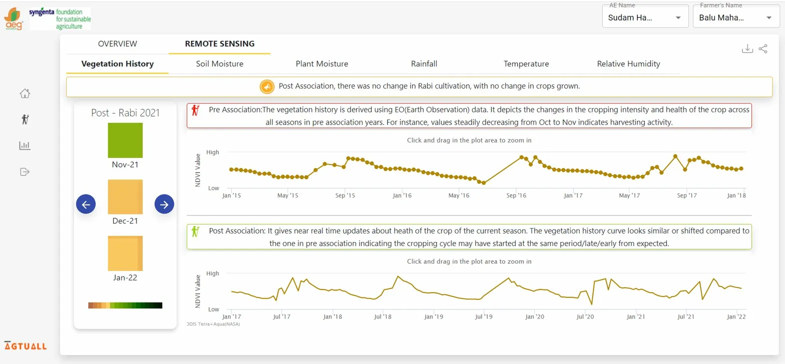
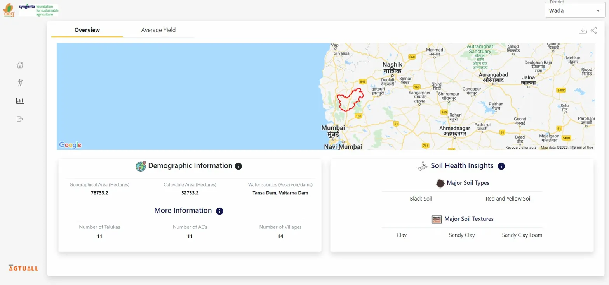
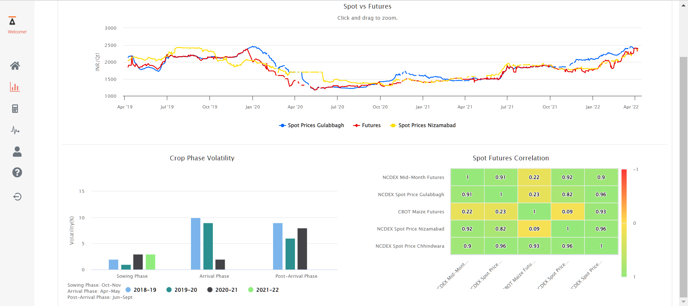
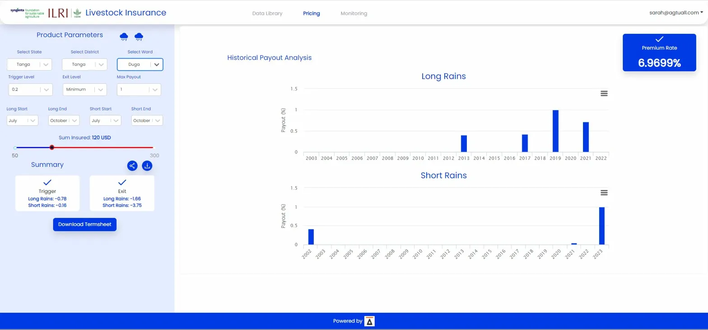
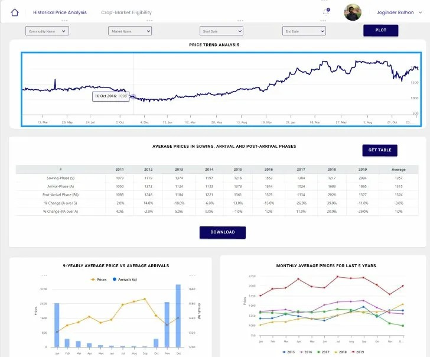
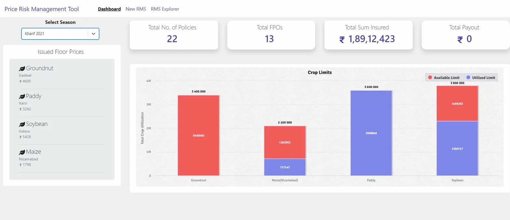

Product · Design · Engineering
Full-stack engineer with a design-first mindset. Built data-heavy interfaces for agriculture and financial markets across India, Africa
A full-stack geospatial intelligence platform enabling agronomists and field teams to monitor crop programs at district scale across Rajasthan. I owned end-to-end UX from initial concept through production.
The core challenge: translating 6000+ farmers across 3 districts into a single coherent spatial interface without overwhelming non-technical extension workers.


Crop productivity dashboard . Alwar, Rajasthan · Kharif 2022
A farmer-level profile card combining satellite remote sensing, agronomic inputs and financial indicators into a single-screen decision tool for Agricultural Extension (AE) workers in the field.
Key design constraint: agents use this on tablets in low-connectivity rural areas. I prioritized the impact score, farm risk, and yield gap

Farmer overview + remote sensing vegetation history · Maharashtra
A clean, data-rich district-level overview designed for program managers who need to understand the agronomic and demographic context of a new geography quickly built to support onboarding of new districts and crop programs.


District overview - Wada, Maharashtra
An Index-Based Livestock Insurance pricing tool for East Africa, a commodity supply/demand intelligence dashboard
Each product serves a audience of actuaries, commodity traders who configure complex financial parameters and need to see how inputs affect risk and pricing instantly.


[1] Cotton supply/demand [2] ILRI livestock insurance (Tanzania)
A clean, commodity overview designed to support the farmer producer organizations by helping them fight crop price volatility by giving them a better price for their produce so that they are ready for ready for the next sowing seasons.


[1] Commodity Price Analysis [2] Policy Management
I design components, not pages. Every component is reusable, predictable and scalable across features.
My work sits at the intersection of AI models, satellite data, and financial risk domains that doesn't overwhelm users.
I prototype in Figma and build in React. I have owned design and code, which means fewer compromises.
A field agent in Maharashtra reads charts differently than an actuarial analyst in Nairobi. I design for real users.